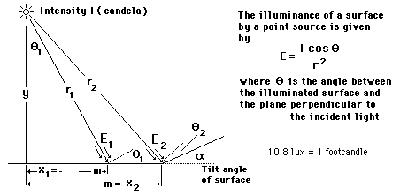

Surface IlluminanceThe illuminance of a surface by a point source depends upon the pointance (intensity), the distance to the surface, and the angle of the surface. The illuminance is measured in lux, but the older unit footcandle is still encountered. Calculation to be added
|
Index Photometry concepts Vision concepts | ||
|
Go Back |